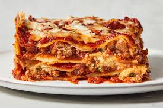

Lasagna

Description
Lasagna is a beloved Italian dish, featuring layers of pasta, meat sauce, and cheese filling. To make this comforting meal, prepare the key components, assemble the layers in a dish, and bake until the cheese is melted and bubbly. Perfect for gatherings or enjoying leftovers, lasagna is a versatile and satisfying main course.
Lasagna noodles
Ground beef or Italian sausage
Marina or tomato sauce
Ricotta cheese
Mozzarella cheese
Parmesan cheese
Eggs
Fresh herbs (basil, parsley, or oregano)
Salt and pepper
Olive oil
Steps
Preheat oven to 375°F (190°C).
Cook lasagna noodles according to package instructions.
In a skillet, cook ground beef or Italian sausage, then mix with marinara or tomato sauce.
In a bowl, mix ricotta cheese, 1 cup of mozzarella cheese, 1/2 cup of Parmesan cheese, eggs, and fresh herbs.
In a baking dish, layer cooked noodles, meat sauce, and cheese mixture.
Sprinkle with remaining mozzarella and Parmesan cheese.
Cover with foil and bake for 25 minutes.
Remove foil and bake for an additional 25 minutes, or until cheese is melted and bubbly.
Let cool for 10 minutes before serving.